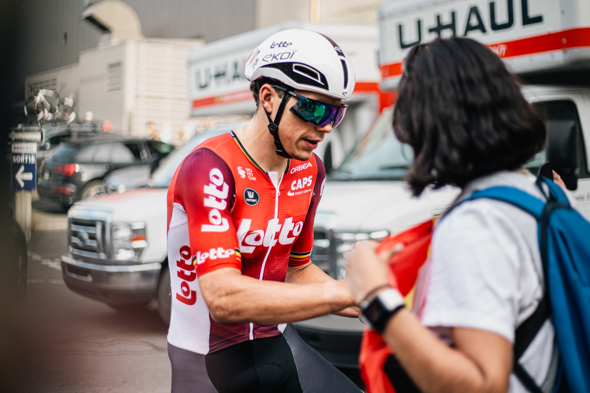
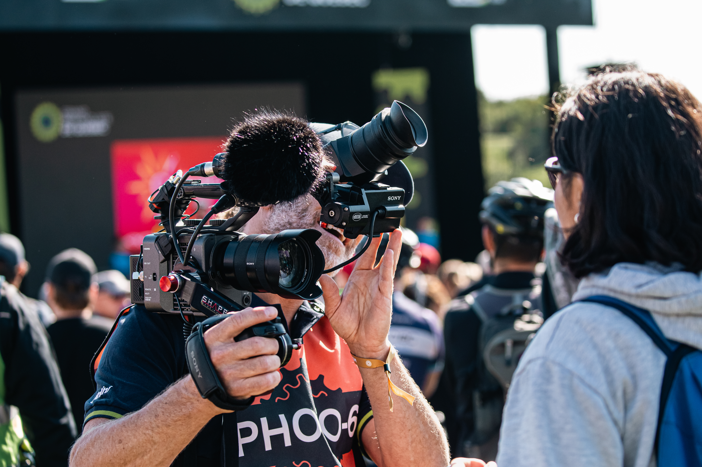

Youmie
Entre recherche et racines
J’ai toujours été passionnée par la politique internationale! Au fil de mon baccalauréat, ma curiosité pour la Chine n’a cessé de grandir, jusqu’à devenir un véritable fil conducteur dans mon parcours. Ce qui n’était au départ qu’un intérêt est devenu le point de départ de mon mémoire. Mon projet de recherche porte sur le Soft Power chinois en Amérique latine. Ce concept désigne la capacité d’un pays à exercer de l’influence non pas par la force ou la contrainte, mais par l’attraction, notamment grâce à sa culture, à ses échanges économiques et à sa diplomatie. Ce travail me permet de relier cette passion à mes origines guatémaltèques, en explorant une région qui fait partie de mon identité. À travers lui, je souhaite mieux comprendre comment ces dynamiques transforment le continent.
Mes réalisations

Quelques moments dont je suis particulièrement fière. Des grands accomplissements aux petites victoires, tout compte !
Mon CV
Retrouve ici mon parcours académique et professionnel. Tu peux aussi télécharger mon CV complet en un clic.
Me joindre
Une question sur le Soft Power, le vélo ou le trail ? Écris-moi, je réponds avec plaisir !